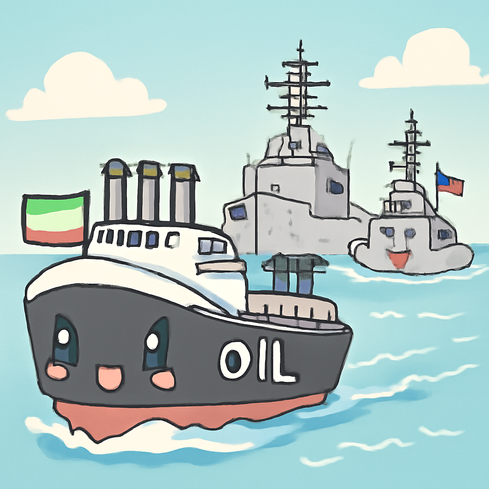
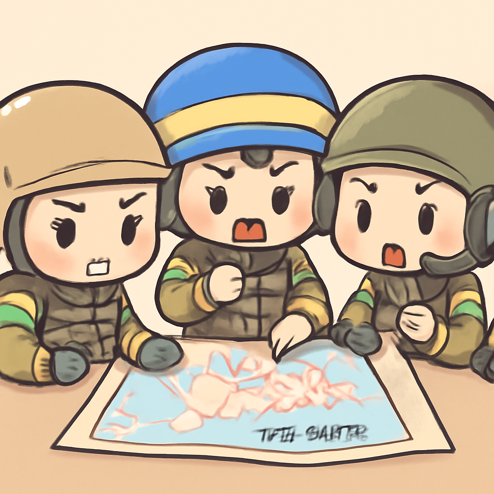

其一 · 伊朗 · 油輪突破美軍封鎖
三艘伊朗油輪成功越過美軍封鎖線。

在霍爾木茲海峽，三艘載滿原油的伊朗油輪成功越過美軍的封鎖，這對美伊緊張局勢而言無疑是一個挑釁。這件事不僅影響了地緣政治，也讓油價可能受到影響，未來幾天市場反應值得關注。或許這就是伊朗想對美國說的：“我們的油，誰都擋不住！”
🔗 原始新聞 ↗
2026-06-18 · 以古觀今，以笑抗愁
三艘伊朗油輪成功越過美軍封鎖線。

在霍爾木茲海峽，三艘載滿原油的伊朗油輪成功越過美軍的封鎖，這對美伊緊張局勢而言無疑是一個挑釁。這件事不僅影響了地緣政治，也讓油價可能受到影響，未來幾天市場反應值得關注。或許這就是伊朗想對美國說的：“我們的油，誰都擋不住！”
🔗 原始新聞 ↗
以色列民族主義者違反宗教共享規則。
在耶路撒冷，民族主義者越來越不遵守有關於聖地的共享協議，這對大多數信仰者來說是個不小的衝擊。這樣的行為可能會引發宗教衝突，影響到整個中東的穩定。希望大家能夠和平共處，畢竟，宗教的地方應該是包容的，而不是挑釁的。
🔗 原始新聞 ↗
烏克蘭加大攻擊，對付俄羅斯供應線。

烏克蘭政府正在加大力度對克里米亞的供應線進行攻擊，這被視為一種“物流封鎖”，導致當地出現汽油短缺。這不僅是對俄羅斯的一次重大打擊，也讓人們關注這場戰爭可能帶來的長遠影響。希望這場衝突能早日結束，讓人們能安安靜靜地加油上路。
🔗 原始新聞 ↗
挪威王妃接受肺移植，健康狀況良好。
挪威的王妃梅特-瑪麗特成功接受了肺移植手術，這對她來說無疑是一個新開始。她在術後需要幾週的時間在醫院康復，這不僅讓她的家人鬆了一口氣，也讓國民感到欣慰。希望她能早日回到王宮，繼續她的王妃生活，不過這次可能需要更加小心吸煙了！
🔗 原始新聞 ↗
FBI揭露團體計劃攻擊白宮UFC活動。
FBI最近公開了一個團體的計劃，他們打算利用狙擊手和無人機攻擊即將舉行的白宮UFC活動。這個消息讓人不禁緊張，畢竟，大家來看比賽，卻不是來參加另類的“戰鬥”。安全問題再次成為焦點，也希望相關單位能加強保護措施，確保大家能安安心心享受比賽。
🔗 原始新聞 ↗